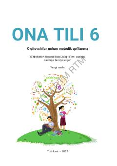

6O6-sinf ona tili fanini o'qitish bo'yicha o'qituvchilar uchun metodik qo'llanma.
Mazkur metodik qo'llanma 6-sinf ona tili darslarini zamonaviy kommunikativ yondashuv asosida tashkil etishga mo'ljallangan. Unda ta'lim jarayonini samarali boshqarish, o'quvchilarning og'zaki va yozma nutq ko'nikmalarini rivojlantirish bo'yicha amaliy tavsiyalar berilgan.